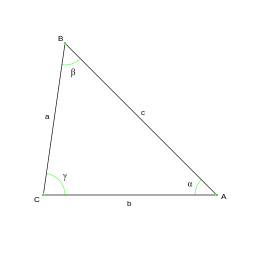

TRIÁNGULO ESCÁLENO

Un triángulo escaleno es un triángulo en el cual los tres lados tienen longitudes diferentes.
También los ángulos de un triángulo escaleno tienen diferentes medidas.
Algunos triángulos rectángulos pueden ser un triángulo escaleno cuando los otros dos ángulos o los catetos no son congruentes.